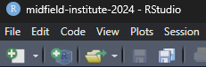

# R data basics
# your name
# date R data basics
Using data.table to manipulate data in R.
License. This material is adapted from Getting started in R: Tinyverse edition by Bashir and Eddelbuettel (2018) which was licensed under CC BY-SA by ilustat. This adaptation and extension, R data basics by Richard Layton, is licensed under CC BY-SA 2.0.
Preface
MIDFIELD data are curated, that is, organized and integrated from multiple institutions, maintained over time, and available for reuse and preservation. Yet to address any specific research question, the data must be wrangled into a shape useful for analysis.
The basic concept of data wrangling is to visualize your data being structured to make your task easier, and then take the steps to add this structure to your data (Zumel & Mount, 2020, p. 113.).
This tutorial covers basic operations for data shaping with the goal of obtaining a simple “data matrix” where each row is an observation and each column is a measurement type.
Using data.table The rationale for manipulating data using the data.table package instead of base R or the dplyr package include speed, memory efficiency, and concise transforms via the []-indexing operator (e.g., the “by” grouping notation).
To mitigate the extra cognitive load for new R users of learning data.table syntax while also learning R, I use a “no-frills” approach as much as possible.
Conceptually, data.table operations can be viewed as
dt[i, j, by]with some intentional similarity to SQL. Here i operates on rows, j operates on columns, and by is the grouping operator.
Before starting. Our tutorials assume that you
- Have completed the Before you arrive instructions
- Have completed the R basics guide
- Have completed the R chart basics guide
Start your R session by launching the RStudio project you created, e.g., midfield-institute-2024.Rproj. If you are in your RStudio project, the project name appears in the upper left corner of the RStudio window, e.g.,

And based on the work you did in the Before you arrive session, your project directory should have three folders:

Getting started
Start a new script. I recommend that you start a new script for this segment.
- Use File > New File > R Script to create a new R script
- File > Save As… to name the file (we suggest
03-data-basics.R), then save it to thescriptsdirectory - At the top of the script, add a minimal header, something like:
- Use
library()to load packages used in the script.
# load packages
library("data.table")
# set data.table printout options
options(
datatable.print.nrows = 20,
datatable.print.topn = 5,
datatable.print.class = TRUE
)Reminder: In a code chunk like the one above, you can click on the “Copy to clipboard” icon in the upper right corner to enable quick copy and paste from this document to your script.
Use your script throughout the tutorial. When a new chunk of code is given,
- Copy the line(s) of code into your script, save, and run.
- Check your result by comparing it to the result in the tutorial.
- Check what you’ve learned using the Your turn exercises.
Import data
Read the same data file we used in the previous tutorial. The data set is in block-record (or “data matrix”) form, that is, variables are columns and observations are rows.
# import data
cw <- fread("data/chick_weight.csv")
# view
cw
#> Chick Diet Time weight
#> <int> <int> <int> <int>
#> 1: 18 1 0 39
#> 2: 18 1 2 35
#> 3: 16 1 0 41
#> 4: 16 1 2 45
#> 5: 16 1 4 49
#> ---
#> 574: 48 4 14 170
#> 575: 48 4 16 222
#> 576: 48 4 18 261
#> 577: 48 4 20 303
#> 578: 48 4 21 322Changes in place
Rename variables. Edit column names “in place.”
By in place we mean that the change is made using data.table reference semantics (or by reference) in which changes are made without assigning the result back to a name, that is, we write
setnames(cw, old, new)not
cw <- setnames(cw, old, new)For example, changing the variable names in the cw data frame,
# change column names in place
setnames(cw,
old = c("Chick", "Diet", "Time", "weight"),
new = c("chick_id", "group", "day", "weight_g"))
cw
#> chick_id group day weight_g
#> <int> <int> <int> <int>
#> 1: 18 1 0 39
#> 2: 18 1 2 35
#> 3: 16 1 0 41
#> 4: 16 1 2 45
#> 5: 16 1 4 49
#> ---
#> 574: 48 4 14 170
#> 575: 48 4 16 222
#> 576: 48 4 18 261
#> 577: 48 4 20 303
#> 578: 48 4 21 322There’s much more to reference semantics than dropping the assignment operator—it’s really about speed and memory efficiency with large data sets. However, for our “basics” series, you need to recall only that the := operator and all data.table functions with names starting with set work by reference.
Exercises are written such that the question is displayed under the tab to the left; the answer is displayed by clicking on the tab to the right.
- Create a copy of
cwusingx <- copy(cw) - In
x, rename the ID variable toID.
x <- copy(cw)
setnames(x, old = c("chick_id"), new = c("ID"))
x
#> ID group day weight_g
#> <int> <int> <int> <int>
#> 1: 18 1 0 39
#> 2: 18 1 2 35
#> 3: 16 1 0 41
#> 4: 16 1 2 45
#> 5: 16 1 4 49
#> ---
#> 574: 48 4 14 170
#> 575: 48 4 16 222
#> 576: 48 4 18 261
#> 577: 48 4 20 303
#> 578: 48 4 21 322Reorder variables. Another example of an operation in-place. The columns listed are moved to the left-hand side of the data frame and other columns appear to the right in their original order. Here we move dayand group to the first two column positions.
# reorder column positions in place
setcolorder(cw, c("day", "group"))
# view
cw
#> day group chick_id weight_g
#> <int> <int> <int> <int>
#> 1: 0 1 18 39
#> 2: 2 1 18 35
#> 3: 0 1 16 41
#> 4: 2 1 16 45
#> 5: 4 1 16 49
#> ---
#> 574: 14 4 48 170
#> 575: 16 4 48 222
#> 576: 18 4 48 261
#> 577: 20 4 48 303
#> 578: 21 4 48 322If you want to make a change without affecting the source data frame, assign a copy of the data frame to a new name with the copy() function. Assignment to a new name is not enough; you have to deliberately use the copy() function.
# create an new object in memory
x <- copy(cw)
# edit in place
setcolorder(x, c("group", "day"))
# view
x
#> group day chick_id weight_g
#> <int> <int> <int> <int>
#> 1: 1 0 18 39
#> 2: 1 2 18 35
#> 3: 1 0 16 41
#> 4: 1 2 16 45
#> 5: 1 4 16 49
#> ---
#> 574: 4 14 48 170
#> 575: 4 16 48 222
#> 576: 4 18 48 261
#> 577: 4 20 48 303
#> 578: 4 21 48 322
# source remains unchanged
cw
#> day group chick_id weight_g
#> <int> <int> <int> <int>
#> 1: 0 1 18 39
#> 2: 2 1 18 35
#> 3: 0 1 16 41
#> 4: 2 1 16 45
#> 5: 4 1 16 49
#> ---
#> 574: 14 4 48 170
#> 575: 16 4 48 222
#> 576: 18 4 48 261
#> 577: 20 4 48 303
#> 578: 21 4 48 322- Create a copy of
cwusingx <- copy(cw) - In
x, reorder the columns from left to right ID, group, day, weight.
x <- copy(cw)
setcolorder(x, c("chick_id", "group", "day", "weight_g"))
x
#> chick_id group day weight_g
#> <int> <int> <int> <int>
#> 1: 18 1 0 39
#> 2: 18 1 2 35
#> 3: 16 1 0 41
#> 4: 16 1 2 45
#> 5: 16 1 4 49
#> ---
#> 574: 48 4 14 170
#> 575: 48 4 16 222
#> 576: 48 4 18 261
#> 577: 48 4 20 303
#> 578: 48 4 21 322Column operations
j to transform a variable. Use := to transform column values in place, here, converting an integer to a double-precision number.
# modify values in an existing column
cw[, weight_g := as.numeric(weight_g)]
# view
cw
#> day group chick_id weight_g
#> <int> <int> <int> <num>
#> 1: 0 1 18 39
#> 2: 2 1 18 35
#> 3: 0 1 16 41
#> 4: 2 1 16 45
#> 5: 4 1 16 49
#> ---
#> 574: 14 4 48 170
#> 575: 16 4 48 222
#> 576: 18 4 48 261
#> 577: 20 4 48 303
#> 578: 21 4 48 322Here we use paste0() to add a prefix to the group number, converting the variable to a character type at the same time.
# modify values in an existing column
cw[, group := paste0("diet ", group)]
# view
cw
#> day group chick_id weight_g
#> <int> <char> <int> <num>
#> 1: 0 diet 1 18 39
#> 2: 2 diet 1 18 35
#> 3: 0 diet 1 16 41
#> 4: 2 diet 1 16 45
#> 5: 4 diet 1 16 49
#> ---
#> 574: 14 diet 4 48 170
#> 575: 16 diet 4 48 222
#> 576: 18 diet 4 48 261
#> 577: 20 diet 4 48 303
#> 578: 21 diet 4 48 322- Create a copy of
cwusingx <- copy(cw) - In
x, add the prefix “day” to the day number, converting the variable to type character.
x <- copy(cw)
x[, day := paste0("day ", day)]
x
#> day group chick_id weight_g
#> <char> <char> <int> <num>
#> 1: day 0 diet 1 18 39
#> 2: day 2 diet 1 18 35
#> 3: day 0 diet 1 16 41
#> 4: day 2 diet 1 16 45
#> 5: day 4 diet 1 16 49
#> ---
#> 574: day 14 diet 4 48 170
#> 575: day 16 diet 4 48 222
#> 576: day 18 diet 4 48 261
#> 577: day 20 diet 4 48 303
#> 578: day 21 diet 4 48 322j to select variables. Variables not listed are dropped. Here, for example, we drop the chick_id variable by not listing it.
# select columns
x <- cw[, .(day, group, weight_g)]
# view
x
#> day group weight_g
#> <int> <char> <num>
#> 1: 0 diet 1 39
#> 2: 2 diet 1 35
#> 3: 0 diet 1 41
#> 4: 2 diet 1 45
#> 5: 4 diet 1 49
#> ---
#> 574: 14 diet 4 170
#> 575: 16 diet 4 222
#> 576: 18 diet 4 261
#> 577: 20 diet 4 303
#> 578: 21 diet 4 322- Create a copy of
cwusingx <- copy(cw) - In
x, select all columns exceptday.
x <- copy(cw)
x <- x[, .(chick_id, group, weight_g)]
x
#> chick_id group weight_g
#> <int> <char> <num>
#> 1: 18 diet 1 39
#> 2: 18 diet 1 35
#> 3: 16 diet 1 41
#> 4: 16 diet 1 45
#> 5: 16 diet 1 49
#> ---
#> 574: 48 diet 4 170
#> 575: 48 diet 4 222
#> 576: 48 diet 4 261
#> 577: 48 diet 4 303
#> 578: 48 diet 4 322j to add a variable. The new variable is added to the right of the other columns. Here, for example, we add the weight_kg variable.
# add a column
cw[, weight_kg := weight_g / 1000]
# view
cw
#> day group chick_id weight_g weight_kg
#> <int> <char> <int> <num> <num>
#> 1: 0 diet 1 18 39 0.039
#> 2: 2 diet 1 18 35 0.035
#> 3: 0 diet 1 16 41 0.041
#> 4: 2 diet 1 16 45 0.045
#> 5: 4 diet 1 16 49 0.049
#> ---
#> 574: 14 diet 4 48 170 0.170
#> 575: 16 diet 4 48 222 0.222
#> 576: 18 diet 4 48 261 0.261
#> 577: 20 diet 4 48 303 0.303
#> 578: 21 diet 4 48 322 0.322- Create a copy of
cwusingx <- copy(cw) - In
x, add a weight variableweight_ozin ounces (28.35 grams per ounce). Round the answer to the nearest tenth.
x <- copy(cw)
x[, weight_oz := round(weight_g / 28.35, 1)]
x
#> day group chick_id weight_g weight_kg weight_oz
#> <int> <char> <int> <num> <num> <num>
#> 1: 0 diet 1 18 39 0.039 1.4
#> 2: 2 diet 1 18 35 0.035 1.2
#> 3: 0 diet 1 16 41 0.041 1.4
#> 4: 2 diet 1 16 45 0.045 1.6
#> 5: 4 diet 1 16 49 0.049 1.7
#> ---
#> 574: 14 diet 4 48 170 0.170 6.0
#> 575: 16 diet 4 48 222 0.222 7.8
#> 576: 18 diet 4 48 261 0.261 9.2
#> 577: 20 diet 4 48 303 0.303 10.7
#> 578: 21 diet 4 48 322 0.322 11.4j to delete a variable. Assigning NULL by reference deletes the variable.
# delete a column
cw[, weight_kg := NULL]
# view
cw
#> day group chick_id weight_g
#> <int> <char> <int> <num>
#> 1: 0 diet 1 18 39
#> 2: 2 diet 1 18 35
#> 3: 0 diet 1 16 41
#> 4: 2 diet 1 16 45
#> 5: 4 diet 1 16 49
#> ---
#> 574: 14 diet 4 48 170
#> 575: 16 diet 4 48 222
#> 576: 18 diet 4 48 261
#> 577: 20 diet 4 48 303
#> 578: 21 diet 4 48 322Using the x data frame from the previous exercise, delete the weight variables in grams and kilograms.
x[, weight_g := NULL]
x[, weight_kg := NULL]
x
#> day group chick_id weight_oz
#> <int> <char> <int> <num>
#> 1: 0 diet 1 18 1.4
#> 2: 2 diet 1 18 1.2
#> 3: 0 diet 1 16 1.4
#> 4: 2 diet 1 16 1.6
#> 5: 4 diet 1 16 1.7
#> ---
#> 574: 14 diet 4 48 6.0
#> 575: 16 diet 4 48 7.8
#> 576: 18 diet 4 48 9.2
#> 577: 20 diet 4 48 10.7
#> 578: 21 diet 4 48 11.4Row operations
i to filter by values. Use relational operators to compare values.
# subset by observation
y <- cw[day == 21 & weight_g > 300]
# view
y
#> day group chick_id weight_g
#> <int> <char> <int> <num>
#> 1: 21 diet 1 7 305
#> 2: 21 diet 2 29 309
#> 3: 21 diet 2 21 331
#> 4: 21 diet 3 32 305
#> 5: 21 diet 3 40 321
#> 6: 21 diet 3 34 341
#> 7: 21 diet 3 35 373
#> 8: 21 diet 4 48 322For comparing values in vectors use: < (less than), > (greater than), <= (less than or equal to), >= (greater than or equal to), == (equal to), and != (not equal to). These can be combined logically using & (and) and | (or).
- Create a copy of
cwusingx <- copy(cw) - Filter
xto retain all observations on day 4, diet 3
x <- copy(cw)
x <- x[day == 4 & group == "diet 3"]
x
#> day group chick_id weight_g
#> <int> <char> <int> <num>
#> 1: 4 diet 3 33 63
#> 2: 4 diet 3 37 56
#> 3: 4 diet 3 36 61
#> 4: 4 diet 3 31 62
#> 5: 4 diet 3 39 61
#> 6: 4 diet 3 38 61
#> 7: 4 diet 3 32 65
#> 8: 4 diet 3 40 66
#> 9: 4 diet 3 34 63
#> 10: 4 diet 3 35 64i to arrange rows.
# order rows by values in columns
y <- cw[order(weight_g, day)]
# view
y
#> day group chick_id weight_g
#> <int> <char> <int> <num>
#> 1: 2 diet 1 18 35
#> 2: 0 diet 1 18 39
#> 3: 0 diet 2 27 39
#> 4: 0 diet 2 28 39
#> 5: 0 diet 2 29 39
#> ---
#> 574: 21 diet 2 21 331
#> 575: 18 diet 3 35 332
#> 576: 21 diet 3 34 341
#> 577: 20 diet 3 35 361
#> 578: 21 diet 3 35 373- Create a copy of
cwusingx <- copy(cw) - Arrange rows of
xby group and day
x <- copy(cw)
x <- x[order(group, day)]
x
#> day group chick_id weight_g
#> <int> <char> <int> <num>
#> 1: 0 diet 1 18 39
#> 2: 0 diet 1 16 41
#> 3: 0 diet 1 15 41
#> 4: 0 diet 1 13 41
#> 5: 0 diet 1 9 42
#> ---
#> 574: 21 diet 4 49 237
#> 575: 21 diet 4 46 238
#> 576: 21 diet 4 50 264
#> 577: 21 diet 4 42 281
#> 578: 21 diet 4 48 322i to filter by index.
# subset by position
y <- cw[1:10]
# view
y
#> day group chick_id weight_g
#> <int> <char> <int> <num>
#> 1: 0 diet 1 18 39
#> 2: 2 diet 1 18 35
#> 3: 0 diet 1 16 41
#> 4: 2 diet 1 16 45
#> 5: 4 diet 1 16 49
#> 6: 6 diet 1 16 51
#> 7: 8 diet 1 16 57
#> 8: 10 diet 1 16 51
#> 9: 12 diet 1 16 54
#> 10: 0 diet 1 15 41Using the x data frame from the previous exercise, filter to retain the last 10 rows.
x <- x[569:578]
x
#> day group chick_id weight_g
#> <int> <char> <int> <num>
#> 1: 20 diet 4 48 303
#> 2: 21 diet 4 45 196
#> 3: 21 diet 4 43 200
#> 4: 21 diet 4 41 204
#> 5: 21 diet 4 47 205
#> 6: 21 diet 4 49 237
#> 7: 21 diet 4 46 238
#> 8: 21 diet 4 50 264
#> 9: 21 diet 4 42 281
#> 10: 21 diet 4 48 322Group and summarize
by to count. .N is a data.table function that yields the number of observations (rows) in a group identified with the by argument.
# count number of chicks by diet group
y <- cw[, .(N_chicks = .N), by = c("group")]
# view
y
#> group N_chicks
#> <char> <int>
#> 1: diet 1 220
#> 2: diet 2 120
#> 3: diet 3 120
#> 4: diet 4 118- Create a copy of
cwusingx <- copy(cw) - Count the number of observations by day. Name the variable
count
x <- copy(cw)
x <- x[, .(count = .N), by = c("day")]
x
#> day count
#> <int> <int>
#> 1: 0 50
#> 2: 2 50
#> 3: 4 49
#> 4: 6 49
#> 5: 8 49
#> 6: 10 49
#> 7: 12 49
#> 8: 14 48
#> 9: 16 47
#> 10: 18 47
#> 11: 20 46
#> 12: 21 45by to summarize. Yields three new variables for count, mean, and standard deviation by the two grouping variables group and day.
# compute summary statistics grouped by two variables
y <- cw[, # i (empty)
.(N_chicks = .N, # j
mean_wt_g = round(mean(weight_g), 1), # j (cont.)
std_dev_wt_g = round(sd(weight_g), 1)), # j (cont.)
by = c("group", "day")] # by
# view
y
#> group day N_chicks mean_wt_g std_dev_wt_g
#> <char> <int> <int> <num> <num>
#> 1: diet 1 0 20 41.4 1.0
#> 2: diet 1 2 20 47.2 4.3
#> 3: diet 1 4 19 56.5 4.1
#> 4: diet 1 6 19 66.8 7.8
#> 5: diet 1 8 19 79.7 13.8
#> ---
#> 44: diet 4 14 10 161.8 15.7
#> 45: diet 4 16 10 182.0 25.3
#> 46: diet 4 18 10 202.9 33.6
#> 47: diet 4 20 9 233.9 37.6
#> 48: diet 4 21 9 238.6 43.3- Create a copy of
cwusingx <- copy(cw) - Count the number of chicks in
xby group and day. Name the variablecount
x <- copy(cw)
x <- x[, .(count = .N), by = c("group", "day")]
x
#> group day count
#> <char> <int> <int>
#> 1: diet 1 0 20
#> 2: diet 1 2 20
#> 3: diet 1 4 19
#> 4: diet 1 6 19
#> 5: diet 1 8 19
#> ---
#> 44: diet 4 14 10
#> 45: diet 4 16 10
#> 46: diet 4 18 10
#> 47: diet 4 20 9
#> 48: diet 4 21 9Combine operations
[i, j, by] in combination. In this example, we use i to filter for two specific days, j to create new summary variables grouped by variables group and day. The results are the count N plus weight statistics: mean, standard deviation, median, minimum, and maximum.
# grouped summaries of specific observations
cw_stats <- cw[day %in% c(0, 21), # i
.(N = .N, # j
mean_wt_g = round(mean(weight_g), 0), # j (cont.)
std_dev_wt_g = round(sd(weight_g), 1), # j (cont.)
median_wt_g = median(weight_g), # j (cont.)
min_wt_g = min(weight_g), # j (cont.)
max_wt_g = max(weight_g)), # j (cont.)
by = .(group, day)] # by
# view
cw_stats
#> group day N mean_wt_g std_dev_wt_g median_wt_g min_wt_g max_wt_g
#> <char> <int> <int> <num> <num> <num> <num> <num>
#> 1: diet 1 0 20 41 1.0 41.0 39 43
#> 2: diet 1 21 16 178 58.7 166.0 96 305
#> 3: diet 2 0 10 41 1.5 40.5 39 43
#> 4: diet 2 21 10 215 78.1 212.5 74 331
#> 5: diet 3 0 10 41 1.0 41.0 39 42
#> 6: diet 3 21 10 270 71.6 281.0 147 373
#> 7: diet 4 0 10 41 1.1 41.0 39 42
#> 8: diet 4 21 9 239 43.3 237.0 196 322Create a table
Finally, we can make the summaries “prettier” for a possible report or publication where we format the numeric values as text and edit the column names for readability just before printing.
# combine mean and std dev into a single character column
cw_stats[, mean_sd := paste0(mean_wt_g, " (", std_dev_wt_g, ")")]
# combine min and max into a range column
cw_stats[, range := paste0(min_wt_g, "--", max_wt_g)]
# retain specific columns
cw_stats <- cw_stats[ , .(group, day, N, mean_sd, median_wt_g, range)]
# order the rows
cw_stats <- cw_stats[order(group, day)]
# edit the column names for readability
setnames(cw_stats,
old = c("group", "day", "median_wt_g","mean_sd", "range"),
new = c("Group", "Day", "Median", "Mean [SD]", "Range"))
# view
cw_stats
#> Group Day N Mean [SD] Median Range
#> <char> <int> <int> <char> <num> <char>
#> 1: diet 1 0 20 41 (1) 41.0 39--43
#> 2: diet 1 21 16 178 (58.7) 166.0 96--305
#> 3: diet 2 0 10 41 (1.5) 40.5 39--43
#> 4: diet 2 21 10 215 (78.1) 212.5 74--331
#> 5: diet 3 0 10 41 (1) 41.0 39--42
#> 6: diet 3 21 10 270 (71.6) 281.0 147--373
#> 7: diet 4 0 10 41 (1.1) 41.0 39--42
#> 8: diet 4 21 9 239 (43.3) 237.0 196--322Eventually you should be able to produce a publication-ready version such as the following table, using Rmarkdown and the knitr package. Full details are available in other sources.
| Group | Day | N | Mean [SD] | Median | Range |
|---|---|---|---|---|---|
| diet 1 | 0 | 20 | 41 (1) | 41.0 | 39–43 |
| diet 1 | 21 | 16 | 178 (58.7) | 166.0 | 96–305 |
| diet 2 | 0 | 10 | 41 (1.5) | 40.5 | 39–43 |
| diet 2 | 21 | 10 | 215 (78.1) | 212.5 | 74–331 |
| diet 3 | 0 | 10 | 41 (1) | 41.0 | 39–42 |
| diet 3 | 21 | 10 | 270 (71.6) | 281.0 | 147–373 |
| diet 4 | 0 | 10 | 41 (1.1) | 41.0 | 39–42 |
| diet 4 | 21 | 9 | 239 (43.3) | 237.0 | 196–322 |
Interpretation. This summary table offers similar results to those revealed in the charts,
- in day 21, diet 3 has the highest mean and median weights
- in day 21, diet 4 has the least variability in weight
In addition, we note that by day 21, diet 1 lost 4 chicks of 20 that started and diet 4 lost 1 of 10. This could be a sign of unsafe conditions.
Conclusion
The R basics, R chart basics, and R data basics guides introduced you to some of the basic concepts for using R and the data.table and ggplot2 packages to manipulate data and create charts. It is only an introduction to what R can do but hopefully you have seen some of the potential of using R for data science.
Next steps. There are plenty of R courses, books, and online resources that you can learn from. Find things that work for you and don’t be afraid to make mistakes or ask questions.
During the MIDFIELD workshops, you will build on what you’ve learned here, and use the midfieldr package to study student unit records. You can preview that material on the midfieldr website.
References
Bashir, S., & Eddelbuettel, D. (2018). Getting started in R: Tinyverse edition. https://eddelbuettel.github.io/gsir-te/Getting-Started-in-R.pdf
Dowle, M., & Srinivasan, A. (2021). Data.table: Extension of ‘data.frame‘. https://CRAN.R-project.org/package=data.table
Zumel, N., & Mount, J. (2020). Practical Data Science with R (2nd ed.). Manning Publications Co.